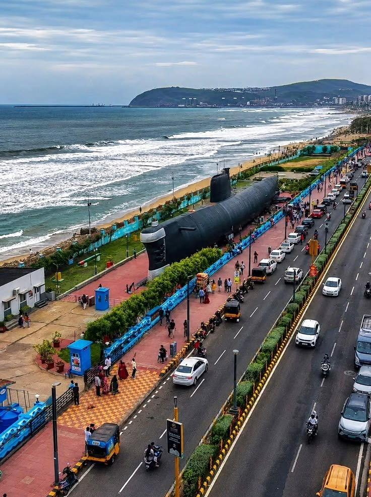

INS Kursura Submarine Museum
The INS Kursura Submarine Museum is a proud naval landmark parked directly on Beach Road. It is a preserved Soviet-built submarine that served in the Indian Navy for over thirty years before being converted into an open-air museum.


Visitors exploring the surrounding park complex of the submarine museum.